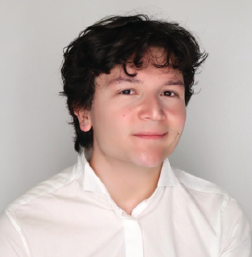

Lui Suzuki-Williams
Lui Suzuki-WilliamsGraduate Student - UCSD MSTP | LSuzuki@scripps.edu LinkedIn OrcID
XXX

Kemal OzkirsehirliUndergraduate Summer Intern | XX LinkedIn
I am an undergraduate student in the Class of 2028 at the Massachusetts Institute of Technology, triple majoring in Biochemistry, Computer Science: Artificial Intelligence-Decision Making, and Mathematics. At present, I am conducting research in Professor Buchwald's organic chemistry laboratory, where I am developing a CuH-catalyzed asymmetric alkylation reactions for the synthesis of crucial pharmaceutical building blocks. Prior to that, I worked on a Python backend for LangGraph-based chemistry AI agents at Pedal AI. In addition, I served as a Kupcinet-Getz Research Scholar at the Weizmann Institute of Science and modeled enzymatic reaction-diffusion systems using deep learning and stochastic differential equations. In high school, I also had the privilege of representing Turkey at both the International Chemistry Olympiad and the International Mendeleev Chemistry Olympiad and won two bronze medals for my country. My professional interests lie in the areas of drug development, computational and synthetic chemistry and AI-enabled chemical discovery; outside of academics, I enjoy playing volleyball, reading critical literary theory, and running. I am proud to be a research intern at The Scripps Research Institute!
 Kiruthic Selvakumar
Kiruthic SelvakumarHigh School Student | LinkedIn
XXX
Previous members
Research TechniciansLance Li OrcID | 2024-2025
Currently a PhD student in Virology at Harvard University
Shawn Sandhu LinkedIn OrcID | 2024-2025
Currently an MD-PhD student at The University of Chicago
Undergraduate Interns
Ella Kim LinkedIn | Summer-Fall 2025
Currently an undergraduate student at the University of California San Diego